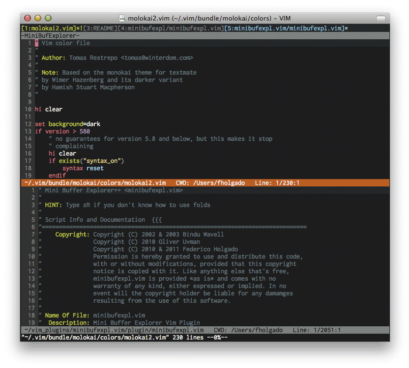
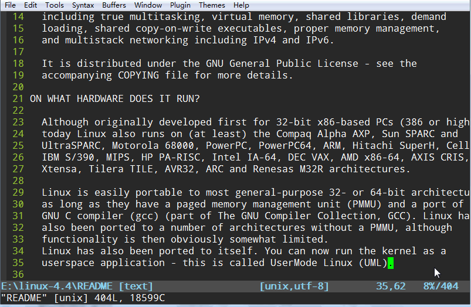

简介
本文简单介绍Vim的一些实用配置，比如修改了Vim配置即刻生效，打开文件时定位到上次关闭的位置等，同时介绍一些比较实用的插件及其配置。
基础配置
|
|
compatible/nocompatible:This option has the effect of making Vim either more Vi-compatible, or
make Vim behave in a more useful way.
从说明中可以看出这样设置可以使Vim更好用，而且这里有些配置Vi是不支持的，所以关闭Vi兼容。
|
|
检测文件类型，如果一个文件在编辑，其对应类型的插件和缩进自动加载。Vim插件依赖这个配置。
|
|
实用配置
.vimrc修改保存时自动加载
|
|
其实命令很简单，如果vim当前buf保存的是.vimrc文件，则执行source .vimrc。相当于在修改.vimrc保存后，手动执行:source %（表示当前文件）。
打开文件时定位到上次关闭的位置
|
|
line(‘“)获取上次退出时所在的行号，line($)获取最大行号。当打开文件时，如果上次退出时所在行大于1或者小于等于最后一行，则跳到那行。
插件
Vundle插件管理器
GitHub地址：https://github.com/VundleVim/Vundle.vim
安装：
Linux环境下命令，且需要用到Git，搜索需要用到Curl
插件管理途径：
.vimrc文件添加需要的插件
Plugin ‘PluginName’ (http://vim-scripts.org/vim/scripts.html下的插件)
Plugin ‘Author/PluginName’ (GitHub仓库的插件)
Plugin ‘PluginAddr’ (非GitHub托管的插件)
Plugin ‘file://path_to_local_plugin’ (本地插件)
插件管理命令：
安装插件：
:PluginInstall [PluginName] // 安装对应插件，不填则全部安装
搜索插件：
:PluginSearch PluginName // 搜索插件
删除插件：
:PluginClean [PluginName] // 删除~/.vim/bundle目录下不在配置中的插件
更新插件：
:PluginUpade [PluginName] // 更新对应插件，不填则全部更新
minibufexpl
github地址：https://github.com/fholgado/minibufexpl.vim
在Vim编辑时像浏览器网页标签一样显示所有打开的buf。

airline
GitHub地址：https://github.com/vim-airline/vim-airline
美观的状态栏，同时可以显示更多的信息。
leaderf
GitHub地址：https://github.com/vim-scripts/LeaderF
文件查找，需要Vim编译时支持Python

总结
Vim是一款强大的编辑器，各位看官们可以根据其丰富的配置和插件，打造出完全属于自己的IDE。